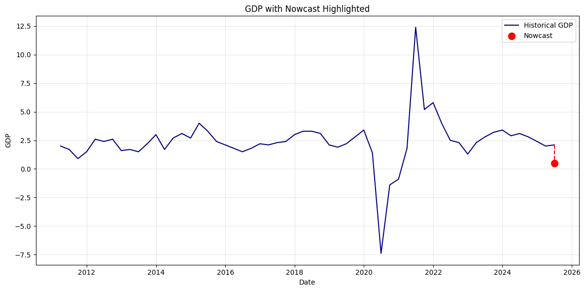
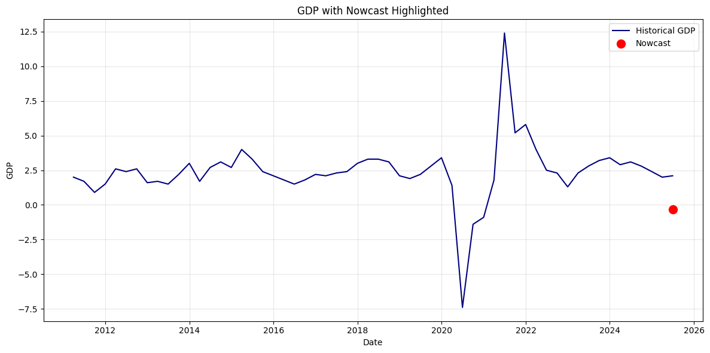
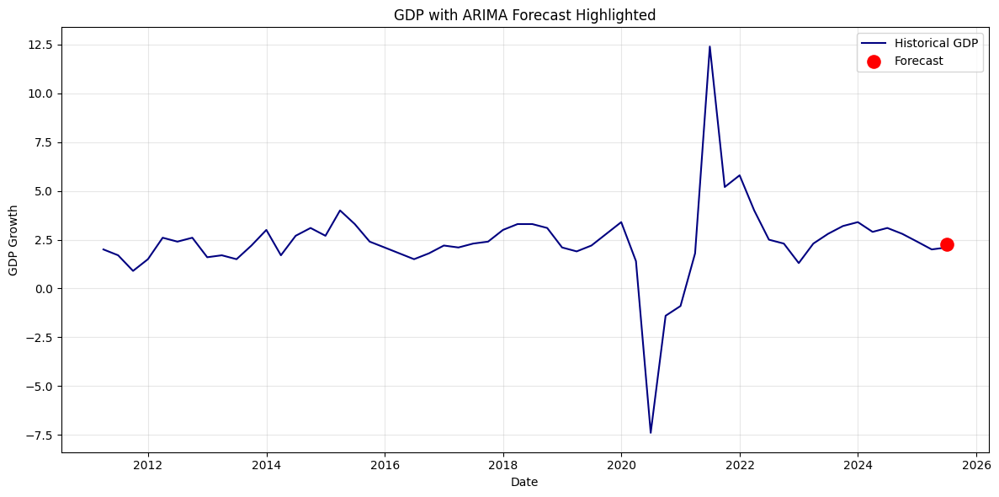
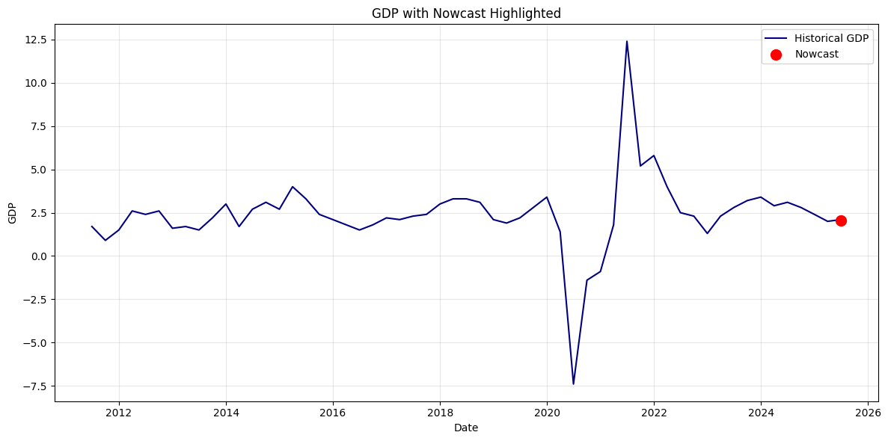
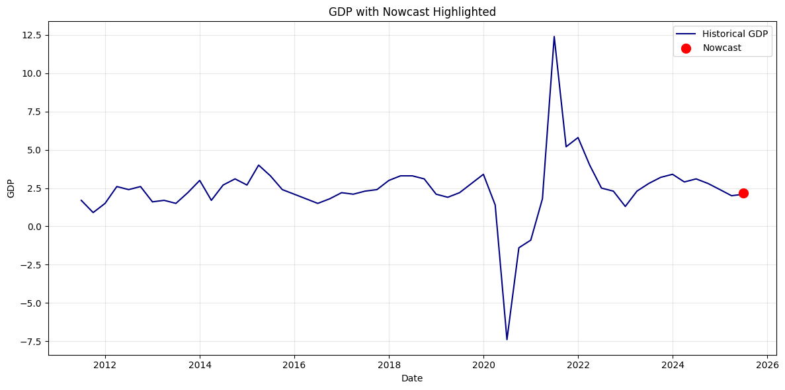

# PACKAGES
import pandas as pd
import numpy as np
import statsmodels.api as sm # for arimax
import pmdarima as pm # for arimax with AIC-based automatic order selection
import matplotlib.pyplot as plt
import warnings
warnings.filterwarnings("ignore")ARIMAX
This script fits an ARIMAX models to our data to nowcast GDP, using our non-GDP variables as exogenous regressors, and incorporating an autoregressive component (previous values of GDP), moving average component (previous residuals of GDP), and differencing (accounts for non-stationarity).
I previously fit this model for nominal GDP, but got some odd results I couldn’t reconcile. This model now forecasts GDP growth (percent change from four quarters ago), instead of raw GDP. A more stationary series like this will hopefully be easier to model.
First, let’s load the packages we need.
Load data.
data = pd.read_csv("../data/data_wpk.csv")
data = data.drop("gdp", axis = 1)We’ll need a datetime index for this model.
data["date"] = pd.to_datetime(data["date"])
data = data.set_index("date")
data = data.asfreq("QE")There’s some missing values for our exogenous regressors, so let’s filter those out.
data_filt = data.loc["2011-03-31" : "2025-06-30"]Now let’s split our data into independent and dependent variables
y = data_filt["gdp_yoy"]
X = data_filt.drop(columns=["gdp_yoy"]) # everything else = exogenous predictors# model
arimax_ord_ones = sm.tsa.SARIMAX(
y,
exog=X,
order=(1, 1, 1), # all order 1 works well for many models
enforce_stationarity=False,
enforce_invertibility=False
)
# fit
fitted_arimax_ord_one = arimax_ord_ones.fit()
print(fitted_arimax_ord_one.summary()) SARIMAX Results
==============================================================================
Dep. Variable: gdp_yoy No. Observations: 58
Model: SARIMAX(1, 1, 1) Log Likelihood -100.367
Date: Sat, 22 Nov 2025 AIC 224.733
Time: 18:19:49 BIC 248.821
Sample: 03-31-2011 HQIC 234.048
- 06-30-2025
Covariance Type: opg
======================================================================================
coef std err z P>|z| [0.025 0.975]
--------------------------------------------------------------------------------------
orders -0.0033 0.019 -0.179 0.858 -0.040 0.033
employment -6.908e-05 0.000 -0.526 0.599 -0.000 0.000
consumer_sentiment 0.1157 0.091 1.272 0.203 -0.063 0.294
unemploy_claims -2.006e-07 2.33e-07 -0.861 0.389 -6.57e-07 2.56e-07
bus_outlook 0.0178 0.053 0.335 0.738 -0.086 0.122
auto_sales 0.2217 0.208 1.065 0.287 -0.186 0.630
construction -2.541e-06 1.45e-05 -0.176 0.861 -3.09e-05 2.58e-05
itrade 9.22e-06 1.95e-05 0.474 0.636 -2.89e-05 4.74e-05
wtrade 8.768e-06 9.8e-06 0.895 0.371 -1.04e-05 2.8e-05
ar.L1 0.0422 0.861 0.049 0.961 -1.646 1.730
ma.L1 -0.3406 0.895 -0.381 0.703 -2.094 1.413
sigma2 2.3343 0.647 3.610 0.000 1.067 3.602
===================================================================================
Ljung-Box (L1) (Q): 0.01 Jarque-Bera (JB): 1191.48
Prob(Q): 0.91 Prob(JB): 0.00
Heteroskedasticity (H): 7.10 Skew: 3.89
Prob(H) (two-sided): 0.00 Kurtosis: 24.44
===================================================================================
Warnings:
[1] Covariance matrix calculated using the outer product of gradients (complex-step).
[2] Covariance matrix is singular or near-singular, with condition number 6.97e+14. Standard errors may be unstable.Now do nowcasting.
# extract last available values of exogenous regressors
X_next = data.drop(columns=["gdp_yoy"]).iloc[-2] # shape (1, k)
print(X_next) # values we'll nowcast withorders 3.170000e+01
employment 3.265000e+05
consumer_sentiment 5.833333e+01
unemploy_claims 2.749000e+06
bus_outlook 1.293333e+01
auto_sales 3.369800e+01
construction 2.230530e+05
itrade -7.831100e+04
wtrade 7.113490e+05
Name: 2025-09-30 00:00:00, dtype: float64nowcast = fitted_arimax_ord_one.get_forecast(steps=1, exog=X_next)
nowcast_value = nowcast.predicted_mean.iloc[0]
nowcast_ci = nowcast.conf_int().iloc[0]
print("Nowcasted GDP Growth:", nowcast_value)
print("95% CI:")
print(nowcast_ci)Nowcasted GDP Growth: 0.47526949245836647
95% CI:
lower gdp_yoy -2.519232
upper gdp_yoy 3.469771
Name: 2025-09-30 00:00:00, dtype: float64Plot nowcast value.
nowcast_date = pd.to_datetime("2025-06-30")
nowcast_series = pd.Series([nowcast_value], index=[nowcast_date])
plt.figure(figsize=(12, 6))
# plot historical GDP
plt.plot(data_filt.index, data_filt["gdp_yoy"], label="Historical GDP", color="navy")
# add the nowcast point
plt.scatter(nowcast_date, nowcast_value,
color="red", s=100, zorder=5, label="Nowcast")
# connect last point to nowcast
plt.plot([data_filt.index[-1], nowcast_date],
[data_filt["gdp_yoy"].iloc[-1], nowcast_value],
color="red", linestyle="--")
plt.title("GDP with Nowcast Highlighted")
plt.xlabel("Date")
plt.ylabel("GDP")
plt.legend()
plt.grid(True, alpha=0.3)
plt.tight_layout()
plt.show()

Interpretation:
TBD
Now let’s try automatically choosing the order values based on the AIC.
auto = pm.auto_arima(
y,
exogenous=X,
seasonal=False,
stepwise=True
)
auto.summary()
order = auto.orderprint(order)(1, 0, 0)A 0 order for the autoregressive component is kind of shocking? Perhaps it’s very highly correlated with our regressors.
# model
arimax_auto_ord = sm.tsa.SARIMAX(
y,
exog=X,
order=order, # all order 1 works well for many models
enforce_stationarity=False,
enforce_invertibility=False
)
# fit
fitted_arimax_auto_ord = arimax_auto_ord.fit()
print(fitted_arimax_auto_ord.summary()) SARIMAX Results
==============================================================================
Dep. Variable: gdp_yoy No. Observations: 58
Model: SARIMAX(1, 0, 0) Log Likelihood -98.335
Date: Sat, 22 Nov 2025 AIC 218.671
Time: 18:19:51 BIC 241.144
Sample: 03-31-2011 HQIC 227.405
- 06-30-2025
Covariance Type: opg
======================================================================================
coef std err z P>|z| [0.025 0.975]
--------------------------------------------------------------------------------------
orders 0.0101 0.019 0.543 0.587 -0.026 0.046
employment -1.631e-05 3.71e-05 -0.439 0.661 -8.91e-05 5.65e-05
consumer_sentiment 0.0287 0.079 0.364 0.716 -0.126 0.183
unemploy_claims -2.048e-07 2.13e-07 -0.963 0.336 -6.22e-07 2.12e-07
bus_outlook 0.0269 0.049 0.552 0.581 -0.069 0.122
auto_sales -0.0072 0.193 -0.037 0.970 -0.385 0.371
construction -2.791e-06 6.65e-06 -0.420 0.675 -1.58e-05 1.02e-05
itrade 3.521e-06 1.88e-05 0.188 0.851 -3.33e-05 4.03e-05
wtrade 6.136e-06 6.05e-06 1.014 0.311 -5.72e-06 1.8e-05
ar.L1 0.2474 0.237 1.042 0.297 -0.218 0.713
sigma2 1.8450 0.464 3.977 0.000 0.936 2.754
===================================================================================
Ljung-Box (L1) (Q): 0.01 Jarque-Bera (JB): 1529.55
Prob(Q): 0.92 Prob(JB): 0.00
Heteroskedasticity (H): 9.36 Skew: 4.16
Prob(H) (two-sided): 0.00 Kurtosis: 26.97
===================================================================================
Warnings:
[1] Covariance matrix calculated using the outer product of gradients (complex-step).nowcast_auto = fitted_arimax_auto_ord.get_forecast(steps=1, exog=X_next)
nowcast_auto_value = nowcast_auto.predicted_mean.iloc[0]
nowcast_auto_ci = nowcast_auto.conf_int().iloc[0]
print("Nowcasted GDP:", nowcast_auto_value)
print("95% CI:")
print(nowcast_auto_ci)
nowcast_auto_series = pd.Series([nowcast_auto_value], index=[nowcast_date])
plt.figure(figsize=(12, 6))
# plot historical GDP
plt.plot(data_filt.index, data_filt["gdp_yoy"], label="Historical GDP", color="navy")
# add the auto chosen nowcast point
plt.scatter(nowcast_date, nowcast_auto_series,
color="red", s=100, zorder=5, label="Nowcast")
plt.title("GDP with Nowcast Highlighted")
plt.xlabel("Date")
plt.ylabel("GDP")
plt.legend()
plt.grid(True, alpha=0.3)
plt.tight_layout()
plt.show()Nowcasted GDP: -0.33520972880922423
95% CI:
lower gdp_yoy -2.997451
upper gdp_yoy 2.327032
Name: 2025-09-30 00:00:00, dtype: float64
These predictions are much better than using raw GDP. Let’s try just a simple ARIMA (for a simple comparison).
y = data_filt["gdp_yoy"]
# simple ARIMA model — start with all ones
arima_ones = sm.tsa.ARIMA(y, order=(1, 1, 1))
arima_ones_fitted = arima_ones.fit()
print(arima_ones_fitted.summary()) SARIMAX Results
==============================================================================
Dep. Variable: gdp_yoy No. Observations: 58
Model: ARIMA(1, 1, 1) Log Likelihood -120.992
Date: Sat, 22 Nov 2025 AIC 247.984
Time: 18:19:52 BIC 254.113
Sample: 03-31-2011 HQIC 250.366
- 06-30-2025
Covariance Type: opg
==============================================================================
coef std err z P>|z| [0.025 0.975]
------------------------------------------------------------------------------
ar.L1 0.4296 0.253 1.697 0.090 -0.067 0.926
ma.L1 -0.9995 10.843 -0.092 0.927 -22.252 20.253
sigma2 3.8665 41.919 0.092 0.927 -78.293 86.026
===================================================================================
Ljung-Box (L1) (Q): 0.00 Jarque-Bera (JB): 887.72
Prob(Q): 0.97 Prob(JB): 0.00
Heteroskedasticity (H): 15.20 Skew: 0.64
Prob(H) (two-sided): 0.00 Kurtosis: 22.29
===================================================================================
Warnings:
[1] Covariance matrix calculated using the outer product of gradients (complex-step).Now to forecast.
forecast_arima = arima_ones_fitted.get_forecast(steps=1)
nowcast_value_arima = forecast_arima.predicted_mean.iloc[0]
nowcast_ci_arima = forecast_arima.conf_int().iloc[0]# make a Series for the forecasted value
nowcast_arima_series = pd.Series([nowcast_value_arima], index=[nowcast_date])
plt.figure(figsize=(12, 6))
# plot historical GDP
plt.plot(y.index, y, label="Historical GDP", color="navy")
# plot the forecast point
plt.scatter(nowcast_date, nowcast_value_arima,
color="red", s=120, zorder=5, label="Forecast")
# dotted line connecting last real value to the forecast
plt.plot([y.index[-1], nowcast_date],
[y.iloc[-1], nowcast_value_arima],
color="red", linestyle="--")
plt.title("GDP with ARIMA Forecast Highlighted")
plt.xlabel("Date")
plt.ylabel("GDP Growth")
plt.legend()
plt.grid(True, alpha=0.3)
plt.tight_layout()
plt.show()
Basically just keeps the trend going – as expected.
Differenced Data Predictors
Let’s try the Arimax on stationary predictors.
data_diff = pd.read_csv("../data/data_differenced_wpk.csv")
data_diff["date"] = pd.to_datetime(data_diff["date"])
data_diff.set_index('date', inplace=True)
# split data
y = data_diff["gdp_yoy"]
X = data_diff.drop(columns=["gdp_yoy"]) # everything else = exogenous predictors
# model
arimax_ord_ones = sm.tsa.SARIMAX(
y,
exog=X,
order=(1, 1, 1), # all order 1 works well for many models
enforce_stationarity=False,
enforce_invertibility=False
)
# fit
fitted_arimax_ord_one = arimax_ord_ones.fit()
print(fitted_arimax_ord_one.summary())
SARIMAX Results
==============================================================================
Dep. Variable: gdp_yoy No. Observations: 57
Model: SARIMAX(1, 1, 1) Log Likelihood -99.841
Date: Tue, 25 Nov 2025 AIC 223.683
Time: 20:06:21 BIC 247.551
Sample: 06-30-2011 HQIC 232.888
- 06-30-2025
Covariance Type: opg
======================================================================================
coef std err z P>|z| [0.025 0.975]
--------------------------------------------------------------------------------------
orders 0.0026 0.011 0.240 0.810 -0.019 0.024
employment -6.919e-05 0.000 -0.424 0.672 -0.000 0.000
consumer_sentiment 0.0084 0.085 0.098 0.922 -0.159 0.176
unemploy_claims -2.822e-07 2.57e-07 -1.099 0.272 -7.85e-07 2.21e-07
bus_outlook 0.0533 0.062 0.855 0.392 -0.069 0.176
auto_sales 0.3050 0.283 1.077 0.281 -0.250 0.860
construction 5.107e-06 4.32e-05 0.118 0.906 -7.96e-05 8.98e-05
itrade 6.843e-06 1.36e-05 0.502 0.615 -1.99e-05 3.35e-05
wtrade -2.731e-06 1.58e-05 -0.172 0.863 -3.38e-05 2.83e-05
ar.L1 0.4976 0.647 0.769 0.442 -0.771 1.766
ma.L1 -0.7660 0.478 -1.603 0.109 -1.702 0.170
sigma2 2.4761 0.394 6.282 0.000 1.704 3.249
===================================================================================
Ljung-Box (L1) (Q): 0.06 Jarque-Bera (JB): 1356.48
Prob(Q): 0.81 Prob(JB): 0.00
Heteroskedasticity (H): 7.58 Skew: 4.23
Prob(H) (two-sided): 0.00 Kurtosis: 26.05
===================================================================================
Warnings:
[1] Covariance matrix calculated using the outer product of gradients (complex-step).Nowcast with stationary predictors data.
# extract last available values of exogenous regressors
X_next = data_diff.drop(columns=["gdp_yoy"]).iloc[-2] # shape (1, k)
print(X_next) # values we'll nowcast with
nowcast = fitted_arimax_ord_one.get_forecast(steps=1, exog=X_next)
nowcast_value = nowcast.predicted_mean.iloc[0]
nowcast_ci = nowcast.conf_int().iloc[0]
print("Nowcasted GDP Growth:", nowcast_value)
print("95% CI:")
print(nowcast_ci)
# PLOT
nowcast_date = pd.to_datetime("2025-06-30")
nowcast_series = pd.Series([nowcast_value], index=[nowcast_date])
plt.figure(figsize=(12, 6))
# plot historical GDP
plt.plot(data_diff.index, data_diff["gdp_yoy"], label="Historical GDP", color="navy")
# add the nowcast point
plt.scatter(nowcast_date, nowcast_value,
color="red", s=100, zorder=5, label="Nowcast")
# connect last point to nowcast
plt.plot([data_diff.index[-1], nowcast_date],
[data_diff["gdp_yoy"].iloc[-1], nowcast_value],
color="red", linestyle="--")
plt.title("GDP with Nowcast Highlighted")
plt.xlabel("Date")
plt.ylabel("GDP")
plt.legend()
plt.grid(True, alpha=0.3)
plt.tight_layout()
plt.show()
orders -2.510000e+01
employment 6.410000e+03
consumer_sentiment -7.633333e+00
unemploy_claims 2.874000e+06
bus_outlook 2.496667e+01
auto_sales 5.072100e+01
construction -1.329000e+04
itrade -1.345480e+05
wtrade 3.791900e+04
Name: 2025-03-31 00:00:00, dtype: float64
Nowcasted GDP Growth: 2.0347642660790797
95% CI:
lower gdp_yoy -1.049350
upper gdp_yoy 5.118879
Name: 2025-09-30 00:00:00, dtype: float64
Now auto-selecting the hyperparameters with an information criterion.
auto = pm.auto_arima(
y,
exogenous=X,
seasonal=False,
stepwise=True
)
auto.summary()
order = auto.order
print(order)
# model
arimax_auto_ord = sm.tsa.SARIMAX(
y,
exog=X,
order=order, # all order 1 works well for many models
enforce_stationarity=False,
enforce_invertibility=False
)
# fit
fitted_arimax_auto_ord = arimax_auto_ord.fit()
print(fitted_arimax_auto_ord.summary())(1, 0, 0)
SARIMAX Results
==============================================================================
Dep. Variable: gdp_yoy No. Observations: 57
Model: SARIMAX(1, 0, 0) Log Likelihood -98.464
Date: Tue, 25 Nov 2025 AIC 218.928
Time: 20:11:40 BIC 241.206
Sample: 06-30-2011 HQIC 227.565
- 06-30-2025
Covariance Type: opg
======================================================================================
coef std err z P>|z| [0.025 0.975]
--------------------------------------------------------------------------------------
orders 0.0017 0.010 0.173 0.862 -0.018 0.021
employment -0.0001 7.09e-05 -1.547 0.122 -0.000 2.92e-05
consumer_sentiment 0.0196 0.125 0.156 0.876 -0.226 0.265
unemploy_claims -2.895e-07 1.09e-07 -2.659 0.008 -5.03e-07 -7.61e-08
bus_outlook 0.0549 0.041 1.354 0.176 -0.025 0.134
auto_sales 0.0604 0.020 3.018 0.003 0.021 0.100
construction 2.625e-05 2.57e-05 1.022 0.307 -2.41e-05 7.66e-05
itrade 4.881e-06 2.64e-05 0.185 0.853 -4.69e-05 5.66e-05
wtrade 1.341e-05 1.12e-05 1.194 0.232 -8.6e-06 3.54e-05
ar.L1 0.2574 0.365 0.706 0.480 -0.457 0.972
sigma2 1.9715 0.349 5.643 0.000 1.287 2.656
===================================================================================
Ljung-Box (L1) (Q): 0.00 Jarque-Bera (JB): 1282.10
Prob(Q): 0.96 Prob(JB): 0.00
Heteroskedasticity (H): 7.31 Skew: 4.01
Prob(H) (two-sided): 0.00 Kurtosis: 25.03
===================================================================================
Warnings:
[1] Covariance matrix calculated using the outer product of gradients (complex-step).nowcast_auto = fitted_arimax_auto_ord.get_forecast(steps=1, exog=X_next)
nowcast_auto_value = nowcast_auto.predicted_mean.iloc[0]
nowcast_auto_ci = nowcast_auto.conf_int().iloc[0]
print("Nowcasted GDP:", nowcast_auto_value)
print("95% CI:")
print(nowcast_auto_ci)
nowcast_auto_series = pd.Series([nowcast_auto_value], index=[nowcast_date])
plt.figure(figsize=(12, 6))
# plot historical GDP
plt.plot(data_diff.index, data_diff["gdp_yoy"], label="Historical GDP", color="navy")
# add the auto chosen nowcast point
plt.scatter(nowcast_date, nowcast_auto_series,
color="red", s=100, zorder=5, label="Nowcast")
plt.title("GDP with Nowcast Highlighted")
plt.xlabel("Date")
plt.ylabel("GDP")
plt.legend()
plt.grid(True, alpha=0.3)
plt.tight_layout()
plt.show()Nowcasted GDP: 2.1729772883496588
95% CI:
lower gdp_yoy -0.579013
upper gdp_yoy 4.924967
Name: 2025-09-30 00:00:00, dtype: float64